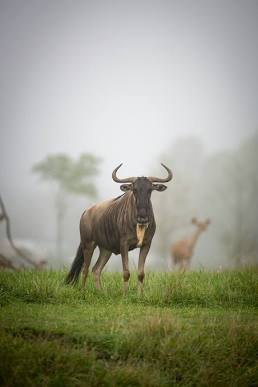
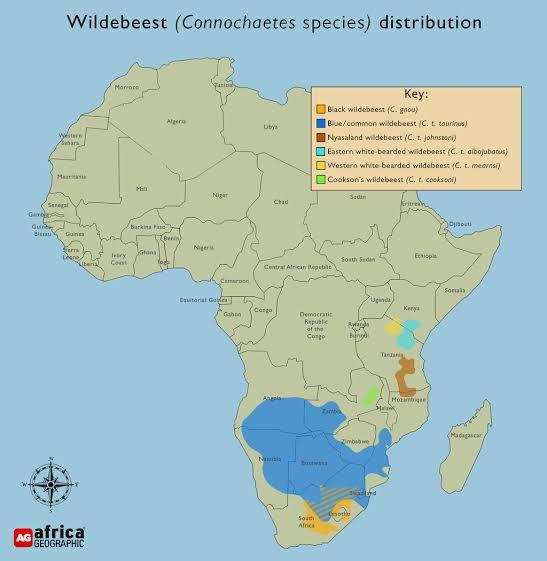
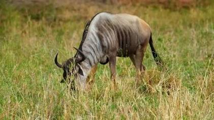
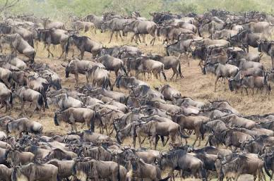
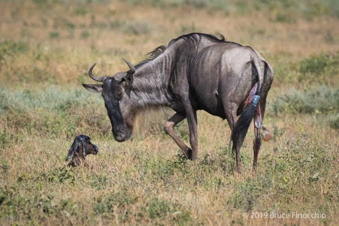
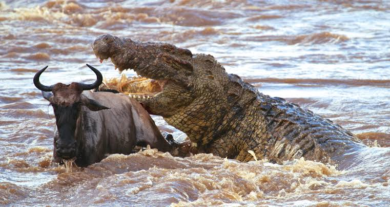

<!DOCTYPE html>
<html lang="en">
<head>
    <meta charset="UTF-8">
    <meta name="viewport" content="width=device-width, initial-scale=1.0">
    <title>Wildebeest Dossier</title>
</head>
<body>
    
</body>
</html>

<header>
<h1>Species Page: Wildebeest</h1>
</header>

<nav>
    <ul>
<li><a href="african-adventure.html">Home</a></li>
    </ul>
</nav>

<main>
    <article>
        <section id="basic-info">
            <h2>Scientific Information</h2>
            <p><strong>Common Name:</strong> Blue Wildebeest (White-bearded Wildebeest)</p>
            <p><strong>Status/Conservation:</strong> Least Concern <sup><a href="#ref1">[1]</a></sup></p>
            <section id="classification">
                <h2>Full Scientific Classification</h2>
                <table border="1">
                    <tr><th>Taxonomic Rank</th><th>Classification</th></tr>
                    <tr><td>Kingdom</td><td>Animalia</td></tr>
                    <tr><td>Phylum</td><td>Chordata</td></tr>
                    <tr><td>Subphylum</td><td>Vertebrata</td></tr>
                    <tr><td>Class</td><td>Mammalia</td></tr>
                    <tr><td>Subclass</td><td>Theria</td></tr>
                    <tr><td>Order</td><td>Artiodactyla</td></tr>
                    <tr><td>Family</td><td>Bovidae</td></tr>
                    <tr><td>Genus</td><td>Connochaetes</td></tr>
                    <tr><td>Species</td><td>Connochaetes taurinus</td></tr>
                </table>
            </section>
         <section id="physical-profile">
            <h2>Physical-profile</h2>
            <dl>
               <dt>Size range</dt>
               <dd> Shoulder height measures 3.8 to 4.8 feet (1.15 to 1.45 meters), with a body length spanning 5.5 to 8 feet (1.7 to 2.4 meters). </dd>

               <dt>Weight</dt>
               <dd> Weighs 260 to 600 pounds (120 to 270 kg), with males being noticeably heavier than females.</dd>
               <dt>Identification Markings</dt>
               <dd>Identification Markings: Sturdy, ox-like bodies with dark vertical stripes along their shoulders and neck, a shaggy dark mane, a bristly beard, a broad snout, and curved, hook-like horns possessed by both sexes.  
                <sup><a href="#ref2">[2]</a></sup></dd>
           </dl>
           
       </section>
       <section id="habitat-geography">
        <h2>Habitat & Geography</h2>
        <p>Habitats: Open short-grass plains, bush-covered savannas, and arid acacia woodlands.
            Distribution: Native to eastern and southern Africa, famously renowned for the massive Serengeti-Mara migration corridor spanning Tanzania and Kenya.</p>
<h3>Distribution Map</h3>

        </section>
<section id="ecology and behavior">
    <h2>Ecology and Behavior</h2>
<h3>Feeding and Diet</h3>
<p>Strict herbivorous grazers feeding primarily on short, nutritious green grasses, frequently migrating across vast distances in sync with seasonal rainfall patterns.</p>
<ul>
    
</section>
<section id="communication and social behavior">
    <h2>Communication and Social Behavior</h2>
    <p>Living in massive herds that can swell into hundreds of thousands during migration, communicating through distinctive low-pitched snorts and groans, and forming strong maternal bonds within nursery groups.</p>
    
</ol>
<h3>Life Cycle and Breeding Behaviors</h3>
                <p>Females give birth synchronously during the rainy season to a single calf after an 8.5-month gestation period, with newborns able to stand and run alongside the herd within minutes of birth.</p>
                
            
            
                <section id="Predators">
    <h2>Predators</h2>
    <p>Apex predators including lions, spotted hyenas, cheetahs, leopards, and Nile crocodiles actively target wildebeests—especially during dangerous river crossings on their annual migration.</p>
    
</section>
    </article>
</main>